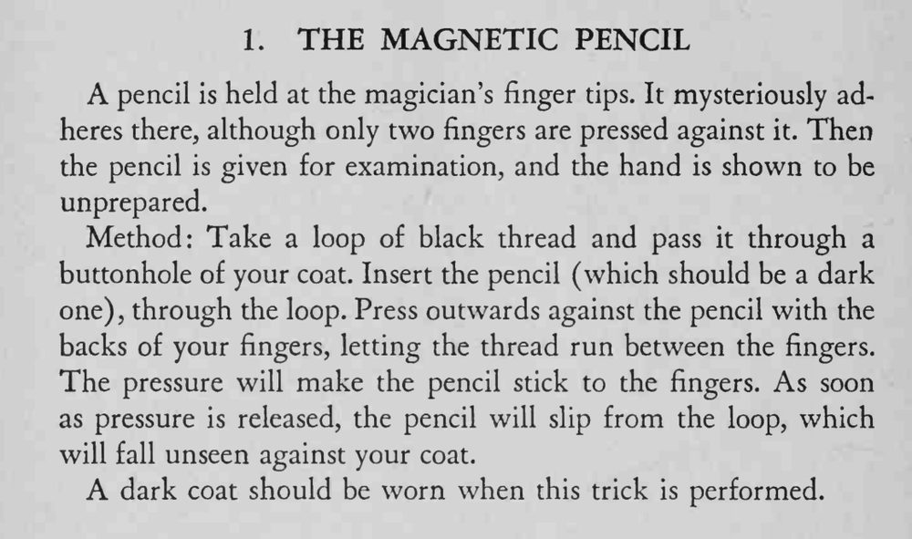

铅笔只被两根手指轻轻按着，就牢牢吸附在指尖上；把手摊开、把铅笔交给观众检查，手上什么也没有。
必须穿深色外套、用深色铅笔配黑线，线松脱时才不会被观众看见。

pencil is held at the magician's finger tips. It mysteriously adheres there, although only two fingers are pressed against it. Then the pencil is given for examination, and the hand is shown to be unprepared. Method: Take a loop of black thread and pass it through a buttonhole of your coat. Insert the pencil (which should be a dark one), through the loop. Press outwards against the pencil with the backs of your fingers, letting the thread run between the fingers. The pressure will make the pencil stick to the fingers. As soon as pressure is released, the pencil will slip from the loop, which will fall unseen against your coat. A dark coat should be worn when this trick is performed.